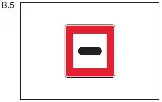

§ 6.26 Durchfahren beweglicher Brücken
Binnenschifffahrtsstraßen-Ordnung
1. Unbeschadet der §§ 6.07, 6.08 und 6.24 hat der Schiffsführer oder die nach § 1.03 Nummer 3 für Kurs und Geschwindigkeit verantwortliche Person bei der Annäherung an eine bewegliche Brücke und bei der Durchfahrt die Anweisungen zu befolgen, die ihm oder ihr von der Brückenaufsicht für die Sicherheit und Leichtigkeit des Verkehrs und zur Beschleunigung der Durchfahrt erteilt werden.
2. Bei der Annäherung an eine bewegliche Brücke muss ein Fahrzeug seine Fahrt verlangsamen. Es muss, wenn es das Öffnen der Brücke verlangt, „zwei lange Töne“ geben oder dies der Brückenaufsicht über Funk mitteilen. Bis zur Freigabe der Durchfahrt muss es sich mindestens 50,00 m von der Brücke entfernt halten, sofern nicht das Tafelzeichen B.5 (Anlage 7) einen anderen Abstand angibt. Kann oder will ein Fahrzeug die Brücke nicht durchfahren, muss es, wenn am Ufer das Tafelzeichen B.5 (Anlage 7) angebracht ist, vor diesem anhalten. |  |
3. Bei der Annäherung an eine bewegliche Brücke ist das Überholen ohne besondere Erlaubnis der Brückenaufsicht verboten.
4. Wird die Durchfahrt bei Tag und bei Nacht durch Signallichter geregelt, haben diese Lichtsignale folgende Bedeutungen:
a) zwei rote Lichter übereinander: keine Durchfahrt (Brücke gesperrt);
b) drei rote Lichter nebeneinander: keine Durchfahrt (Brücke geschlossen, sie kann vorübergehend nicht geöffnet werden);
c) zwei rote Lichter nebeneinander: keine Durchfahrt (Brücke geschlossen oder Gegenverkehr);
d) ein rotes Licht: keine Durchfahrt (Brücke in Bewegung);
e) zwei grüne Lichter nebeneinander: Durchfahrt frei (Brücke geöffnet).
Die Lichter sind nur in Richtung der Durchfahrt sichtbar.
5. Wird ein zusätzliches weißes Licht über den Signallichtern nach Nummer 4 Buchstabe b oder c gezeigt, darf ein Fahrzeug die geschlossene Brücke durchfahren, wenn die Höhe der Durchfahrt oder der Gegenverkehr dies mit Sicherheit zulässt.